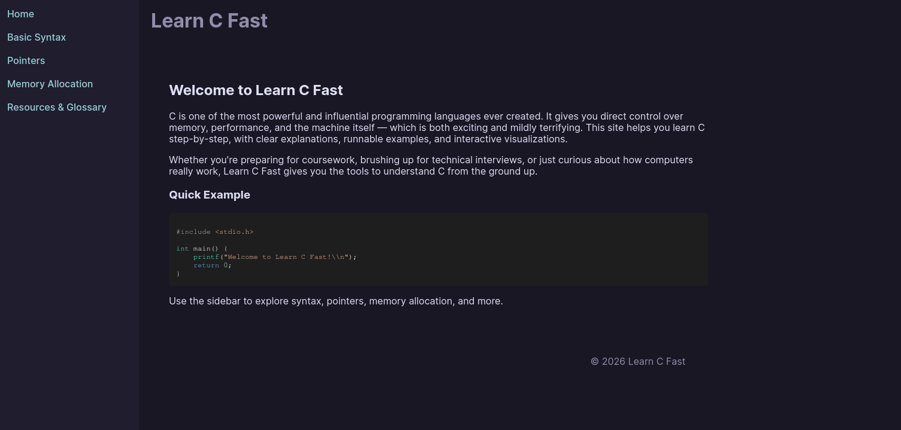

Peer Review 1
Homsi, Amir

Website Link
- Design
- Page is rather easy to read, there is sufficient contrast, and font sizes
- Page used a good combination of site colors and fonts while using a .css file.
- Page is well aligned with Contrast, Repitition, Alignment, and Proximity where all links are easilly accessible aswell as all in one place.
- Page Requirements
- Page has a header, a main, and a footer. Aswell as all of the assignment requirements with the five webpages.
- Header does tell the name of the site.
- Additional Observations and Suggestions
- This is really good mind you. I think that the use of minimalist themes along with the interactivity.
- I would prefer for a different color for the header. Try to experiment with something less muted
- I like the interactive code editor, but the iframe makes it a little clunky to work with.
Review completed by: Marek Christopher Casenhiser
Date: April 19, 2026